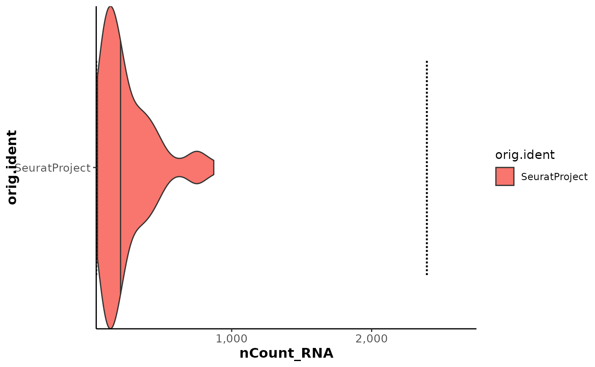
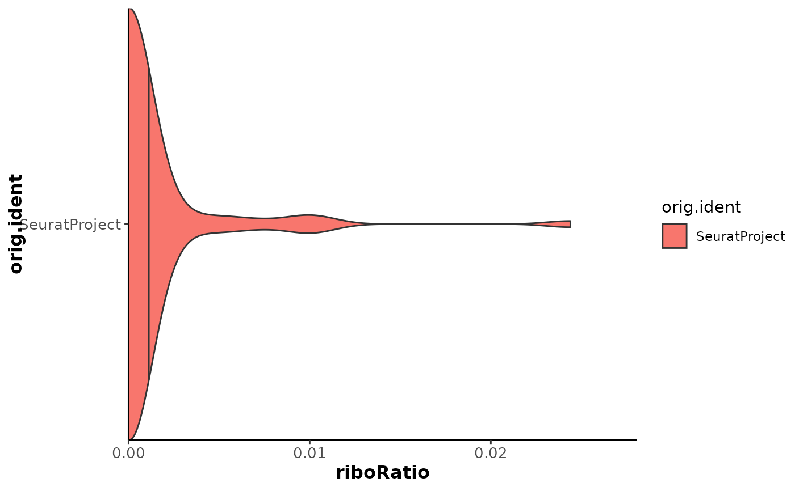

This function creates is used to represent the distribution of the values of a desired metric (meta.data column)
and the corresponding thresholds (if available). It can help in the visual inspection of nmads to use when calculating
outliers with calculate_qc_mad_outliers().
Usage
plot_violin_outliers(
seurat_object = seurat_object,
split_by = "orig.ident",
metric = "nCount_RNA",
title = "",
x_trans = "identity",
fill_vector = NULL
)Arguments
- seurat_object
Seurat object to use.
- split_by
Name of the column used to group_by the violins (usually should correspond to the one used as
batchincalculate_qc_mad_outliers()). Default to "orig.ident".- metric
Name of the column to plot. Default to "nCount_RNA".
- title
Title to add to the plot. Default to "".
- x_trans
Transformation to pass to scale_x_continuous(trans). Default to "identity".
- fill_vector
Optional named vector used to assign fill colors to the different group of fill variable. Default to NULL.
Examples
data("pbmc_small")
pbmc_small <- calculate_qc_metrics(pbmc_small)
pbmc_small <- calculate_qc_mad_outliers(pbmc_small)
# Basic plot
plot_violin_outliers(pbmc_small)

# Changing metric
plot_violin_outliers(pbmc_small, metric = "riboRatio")
#> Warning: Removed 1 row containing missing values or values outside the scale range
#> (`geom_segment()`).
